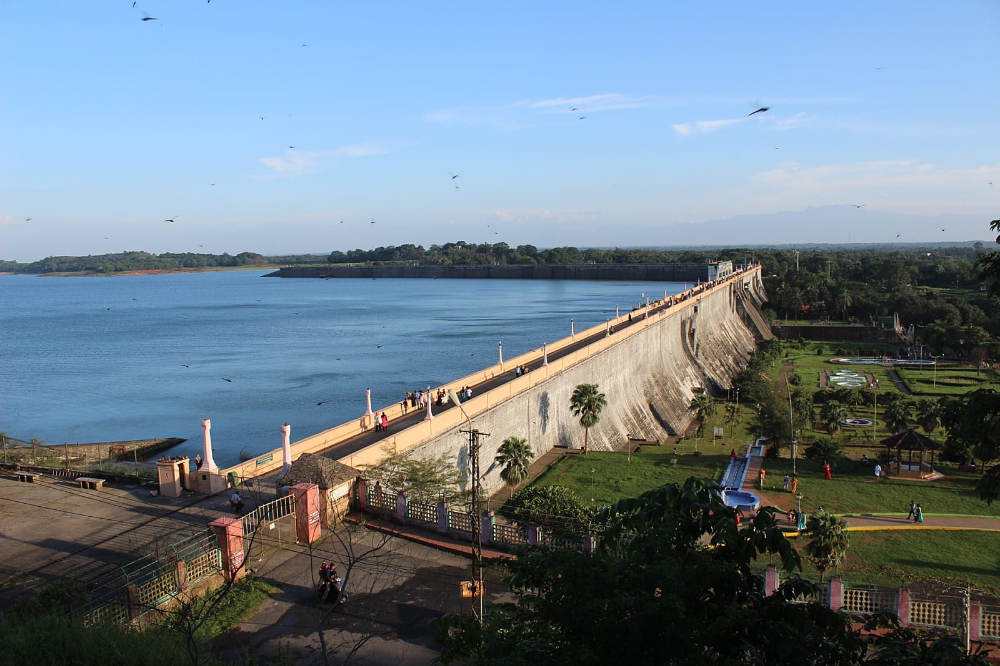

Palakkad
Palakkad is the gateway to Kerala due to the presence of the Palakkad Gap, in the Western Ghats. The total area of the district is 11.5% of the state's area which makes it the largest district of Kerala. Out of the total area of land is covered by forests. Most parts of the district fall in the midland region , except the Nelliampathy-Parambikulam area in the Chittur taluk in the south and Attappadi-Malampuzha area in the north, which are hilly and fall in the highland region. Some important destinations listed:
- Palakkad Fort
- Parambikulam wildlife Sanctuary
- Malampuzha Dam
- Silent valley National park

Nelliyampathy
Malampuzha dam reservour